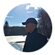

HVEM ER JEG?
SOM 18-ÅRIG ÅBNEDE JEG MIN EGEN BUTIK
MIN HISTORIE
Jeg har beskæftiget mig med online markedsføring siden 2014, hvor jeg åbnede en fysisk butik. Her fandt jeg hurtigt ud af, at en god tilstedeværelse på nettet kunne tiltrække kunder til min forretning. Siden blev jeg så grebet af denne online verden, at jeg købte et 6 ugers marketing kursus hos Bigum & Co, og efterfølgende blev jeg ansat som junior online marketing konsulent hos Vestjysk Marketing.
Jeg er vokset op på Sjælland, og det betød også, at jeg måtte rykke teltpælene op og drage mod det vestjyske. Jeg faldt aldrig rigtigt til derovre, og vendte hjem til Sjælland efter et halvt års tid.
Jeg havde i mellemtiden beskæftiget mig med affiliate marketing i aftentimerne og besluttede at give det et skud, da jeg vendte hjem. Det gik op og ned, og i 2017 blev jeg så ansat som online marketing assistent i Motivas ApS. Her beskæftiger jeg mig primært med SEO og Google AdWords men bygger og vedligeholder også hjemmesider. Ud over arbejdet med online markedsføring elsker jeg at bruge min tid på en fodboldbane.
Jeg er cheftræner i Næstved I.F for U14 bredde.
I mine år med online markedsføring har jeg mest af alt beskæftiget mig med SEO men har også gennem mit konsulent arbejde berørt andre discipliner som PPC og E-mail markedsføring. SEO er dog uden tvivl der min ekspertise er, og det er samtidig det, som jeg synes er sjovest at lave. Dog har jeg gennem årene også lært, at det ikke er nok med en bred viden om et felt, hvis man ikke har en basal viden om de andre områder inden for online markedsføring. I enhver succesfuld marketing strategi, er der sammenspil mellem de forskellige kanaler.
Det jeg elsker mest ved online markedsføring er, at det hele er så håndgribeligt. Find en forbedringsmulighed og tag action på den med det samme. Så elsker jeg også bare at se positive grafer på en kurve i Analytics. Det er sådanne øjeblikke, der driver mig. Ligeledes elsker jeg hele strategidelen, og jeg finder det vældig interessant at få flere kanaler til at spille godt sammen.
I min fritid beskæftiger jeg mig med mine egne hjemmesider. Lige nu arbejder jeg med opholdsguide.dk, hvor jeg sammenligner wellness ophold, weekendophold, gourmet ophold, slotsophold og meget. En super spændende side, som jeg håber en dag kan give mig lov til at køre rundt at anmelde de forskellige ophold.
Jeg beskæftiger mig også med siden testekspert.dk, hvor jeg samler information fra de bedste test af forskellige produkter. Det kan være alt lige fra test af senge til opvaskemaskiner. Et super spændende projekt, som jeg glæder mig meget til at arbejde videre med i de kommende år!
Jeg håber, du vil læse med her på min blog, og ikke mindst at du går herfra endnu klogere. Ønsker du at komme i kontakt med mig, kan det gøres her.
UDTALELSER
Hvad siger andre om mig?
“Jeg har på EASJ i Køge samarbejdet med Mikkel flere gange.
Han går altid forrest og arbejder struktureret. Han har en god all-round viden, der altid er værdsat."
Thøger Junker
Studerende, EASJ
"Hurtig levering af tekster!
Mikkel arbejder altid struktureret og målrettet. Han gør sit bedste og leverer altid til tiden! En fornøjelse!"

Jeppe Thøgersen
Ejer, Leadspecialisten IVS